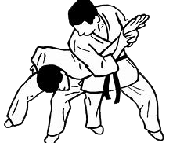

Qui est Jigoro Kano?Née en 1860 et mort en 1938. En 1882 il a fonde le premier dojo et donner comme nom "Kodokan Judo" avec comme méthode appliquer "Kano" pour donner une différence entre ses enseignements et celle des autres école de jujutsu qui existais déjà. Il est aussi pere fondateur du Judo
Kodokan est un mot japonais qui signifie litteralement "Ecole pour étude de la voie",le premier club à avoir porter le nom de kodokan fut celle de Jigoro Kano en 1882.
Club Kodokan choc,fut crée par grand maitre Coeur de Lion du vrai nom Kevine Kisimbi,3ieme Dan dans le discipline du ju-jitsu et bien d'autre discipline comme le Judo,MMA,Boxe et le karate.Le but de notre club est de transmettre les bonnes pratiques, en propageant les valeurs de ce sport,le club forme des athletes competents, mais aussi des individus respectueux, integres et courageux.
Maitre coeur de lion vice champion du MMA Congolaise,et plus des titres
Au Club Kodokan Choc de kabondo, votre cours d'essai est gratuit.
L'entrainement se deroule presque chaque jours, a partir de 16h30. On a deux grand club dans la zone,un vers pk6 et l'autre vers Artisanal dans l'ecole la creshe.